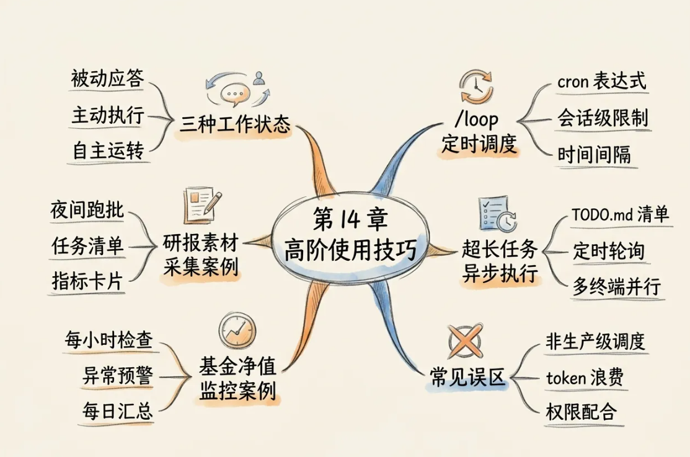
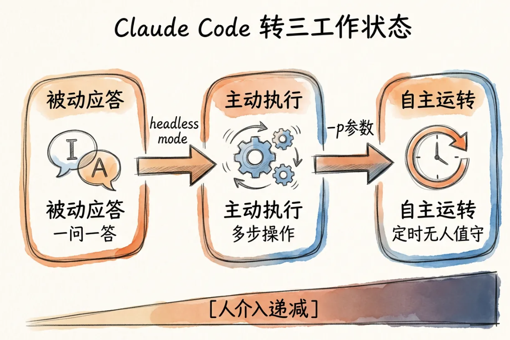
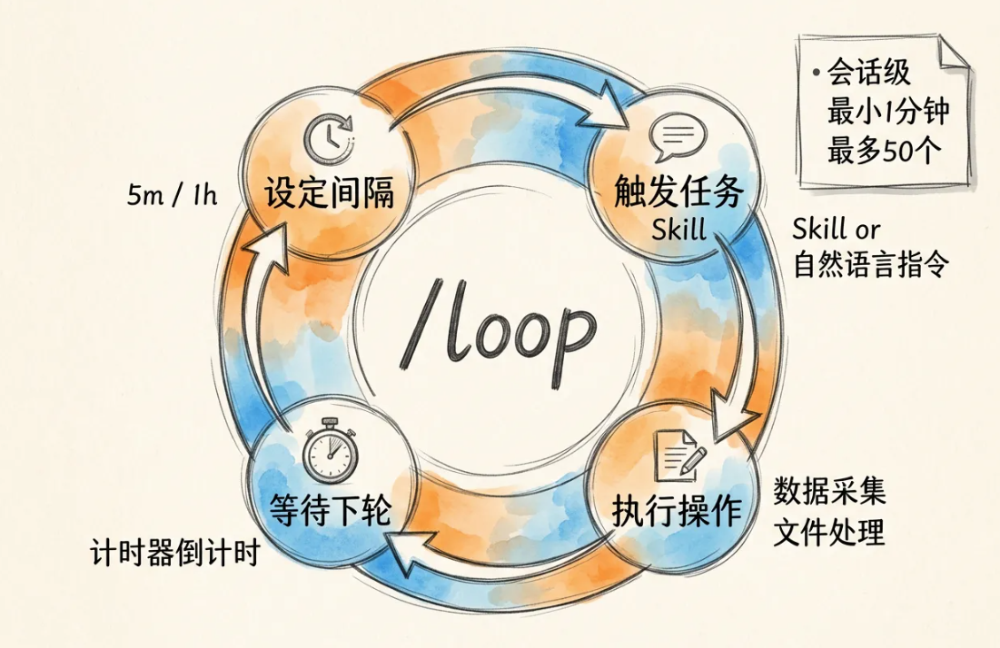
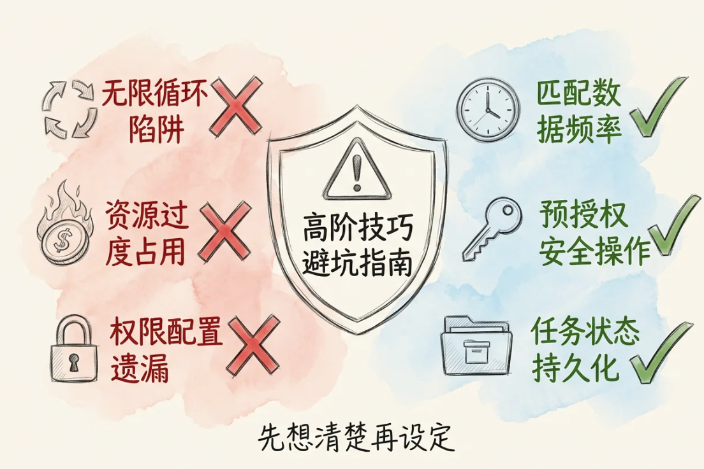
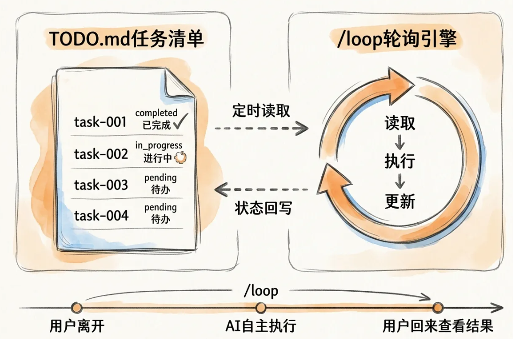
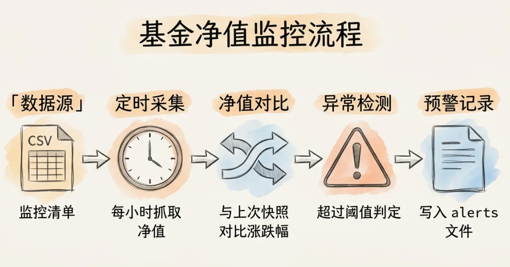
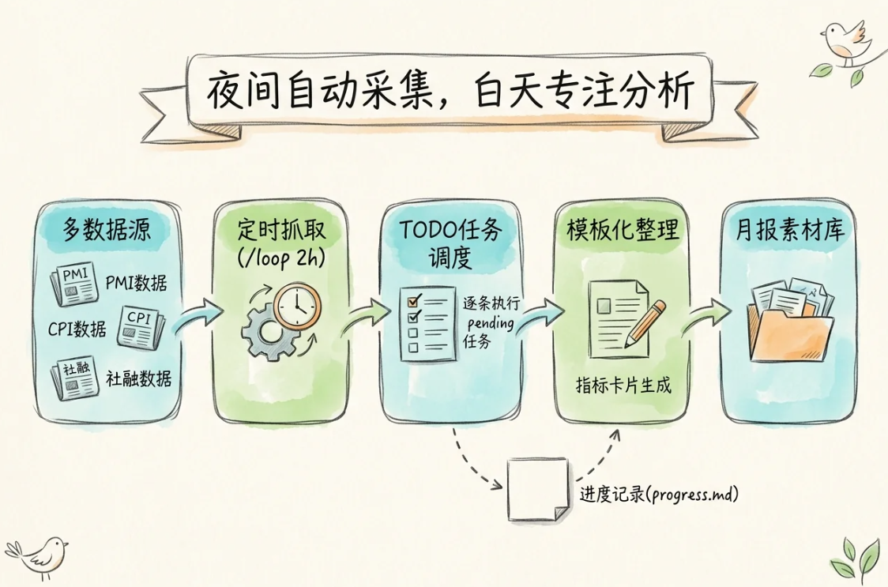

高阶使用技巧：从交互对话到自主运转
/loop 定时调度器、TODO.md 异步执行、金融场景中的轻量级自动化
本章目标不是单独记住一个命令，而是理解如何把 /loop、TODO.md、CLAUDE.md、Hooks 组合成一个可持续运行、可追踪、可干预的轻量级 AI 工作流。
第14章在讲什么？
- 从“你问我答”走向“AI 自主运转”
- 用
/loop建立会话级定时任务 - 用
TODO.md承载长任务与任务状态 - 理解限制、误区与安全边界
- 将方法落到基金监控、研报采集两个金融实践场景

一、学习目标：从理解到实践
理解
/loop 的定位是“会话级定时任务调度器”，不是完整生产调度系统。
掌握
掌握 /loop 的基本语法、时间间隔格式、一次性提醒和任务管理。
应用
把 /loop 与 TODO.md 结合，实现超长任务的异步执行。
辨析
识别会话级限制、token 浪费、权限配合和生产化部署边界。
核心能力：让 AI 不只“被问才答”，而是在规则、清单和时间触发下持续执行可控任务。
二、AI 工作方式的三个阶段
1. 被动应答
用户输入问题或指令，Claude 返回结果。适合问答、解释、短任务。
2. 主动执行
用户给出任务目标，Claude 自主完成多步操作。适合代码修改、数据整理。
3. 自主运转
Claude 按时间或任务清单持续执行，用户无需一直在场。
关键变化：人类介入从“每一步都输入”逐渐变为“设定目标、检查结果、必要时干预”。
从对话工具到轻量监控系统
本章的组合思路是把四个模块连接起来：
/loop：提供定时触发能力TODO.md：提供结构化任务清单CLAUDE.md：提供长期规则、项目知识和口径约束Hooks：提供质量门禁、自动检查和自动提交

三、/loop 是什么？
/loop 是 Claude Code 中用于周期性执行任务的内置命令，可以理解为“会话级轮询器”：你用自然语言描述任务，Claude 在当前 session 内按间隔重复执行。
适合做什么
- 定时检查文件或目录变化
- 定时采集数据并写入摘要
- 定时检查 CI、PR 或任务状态
不适合做什么
- 长期无人值守生产系统
- 高频毫秒级任务
- 权限复杂、失败代价高的自动化
/loop 的运行逻辑
设定间隔
例如 5m、30m、1h、24h。
触发任务
执行自然语言指令或调用 Skill。
等待下轮
计时器倒计时，进入下一轮。
它的本质是“定时轮询”：不断重复“检查—执行—等待”的循环。

时间间隔格式
| 单位 | 缩写 | 示例 | 适合场景 |
|---|---|---|---|
| 秒 | s | 30s | 向上取整到 1 分钟，通常不建议高频使用 |
| 分钟 | m | 5m、30m | 最常用，用于状态检查、数据采集 |
| 小时 | h | 1h、2h | 适合定期巡检、阶段性汇总 |
| 天 | d | 1d | 适合每日汇总、日报生成 |
省略时间间隔时，默认约为 10 分钟。底层可转为 cron 表达式，但用户通常无需手写 cron。
/loop 用法示例
部署检查
适合等待异步部署、构建或下载任务完成。
CI / PR 监控
适合研发场景中的质量反馈闭环。
数据汇总
适合金融数据采集和周期性统计。
每日变更摘要
适合团队日报、变更日志或复盘材料。
一次性提醒与任务管理
一次性提醒
除循环任务外，也可以设置一次性提醒，执行后自动删除。
任务管理
可以用自然语言查看、取消任务；底层工具包括 CronCreate、CronList、CronDelete。
通常不需要直接调用底层工具，用自然语言描述“查看任务”或“取消某任务”即可。
/loop 的技术限制
| 限制项 | 含义 | 实践提醒 |
|---|---|---|
| 会话级 | 绑定当前终端 session | 终端关闭后任务即消失 |
| 不持久化 | 重启后任务清空 | 跨重启请用 scheduled tasks 或 GitHub Actions |
| 不补跑 | Claude 忙碌时错过触发不会补执行 | 适合轻量轮询，不适合强一致调度 |
| 最多 50 个 | 每个 session 同时最多 50 个任务 | 避免滥用与重复任务 |
| 最小粒度 | 1 分钟 | 不要设计高频秒级任务 |
| 72 小时过期 | 循环任务创建后自动过期 | 长期任务需外部调度 |
常见误区与边界
- 不是完全无人值守：会话关闭或任务过期会中断
- 不是生产级调度：不保证持久化、不保证补跑
- 可能浪费 token：过于频繁的检查会持续消耗上下文与调用成本
- 权限仍需配置：文件、网络、工具权限必须提前明确

四、/loop + TODO.md：长任务异步执行
/loop 负责定时轮询，TODO.md 负责记录结构化任务。两者结合后，用户只需写好清单，Claude 按时间间隔读取、执行、更新状态。
写清单
用户在 TODO.md 中列出任务，状态设为 pending。
定时读取
/loop 周期性读取清单，找到第一个待处理任务。
执行更新
Claude 执行任务，并把状态改为 completed 或 in_progress。
写入日志
把执行结果、时间和异常写入 progress.md。
TODO.md 任务清单示例
任务粒度应控制在 Claude 单次执行能够完成的范围内，通常建议 5—15 分钟内可完成。

异步模式：用户与 AI 的时间解耦
| 维度 | 传统同步模式 | /loop 异步模式 |
|---|---|---|
| 工作流 | 用户输入 → AI 执行 → 用户查看 → 下一个 | 用户写清单 → AI 后台循环执行 |
| 用户是否在场 | 必须在场等待 | 写完清单后可以离开 |
| 任务追加 | 前一任务完成后才能下达 | 随时往文件中追加新任务 |
| 适合场景 | 需要实时反馈的交互 | 批量处理、定时采集、夜间跑任务 |
在金融研究场景中，这种模式尤其适合“晚上跑数据，第二天看结果”。
多终端并行：多个 Claude Code Session 协同
终端 1：舆情监控
终端 2：数据采集
结合 tmux 分屏，可以在一个界面同时观察多个 Claude Code session 的运行状态。
三层架构：让任务更稳定
CLAUDE.md
提供长期规则、项目背景、输出格式、禁止事项和金融分析口径。
TODO.md
提供任务队列、任务状态和可追踪的执行顺序。
/loop
提供定时轮询机制，把任务从同步等待转为异步推进。
如果进一步加入 Hooks，可在每次执行后自动检查输出质量、记录日志或触发提交。
基金净值监控与异常预警
目标：定期读取基金净值、计算变化、识别异常波动，并形成可复盘的监控记录。
- 定时读取净值数据
- 计算涨跌幅与异常阈值
- 生成预警记录
- 每日汇总为报告文件

基金净值监控：推荐配置
CLAUDE.md 规则
- 定义数据源路径
- 规定异常阈值
- 统一输出格式
- 禁止在缺失数据时编造结论
/loop 任务
这个场景的关键不是“自动投资决策”，而是自动完成监测、记录和初步预警，最终判断仍应由人工负责。
研报素材采集与整理
目标：自动收集新闻、指标、公司公告和宏观资料，形成第二天可直接使用的研报素材库。
- 按主题读取指定目录
- 筛选新增资料
- 生成素材摘要
- 沉淀到 Markdown 或 CSV

研报素材采集：推荐工作流
建立素材目录
如 news/、macro/、industry/、company/。
定时检查
用 /loop 读取新增文件或数据源。
摘要整理
按主题生成 bullets、关键词和风险提示。
人工复核
第二天人工筛选、补充和写作。
小结：第14章的核心 takeaway
1. /loop 是轻量调度器
适合短周期、会话级、低风险的定时任务。
2. TODO.md 是任务队列
让超长任务可拆解、可轮询、可追踪。
3. 异步模式提升效率
用户不必等待每个任务完成，可以让 AI 后台推进。
4. 金融场景要重视边界
适合监控、采集、整理，不应替代人工判断和合规审核。
讨论题：如果要把 /loop 用于你的研究项目，哪些任务适合自动化？哪些任务必须保留人工复核？